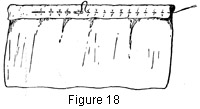

Select any picture to view an
enlargement in a new window
1930—Millinery Processes
by Carlotta M. Brown
CASINGS
A casing is a turned edge on a strip of material used to hold a cord or wire in place. Material cut on the straight or on the bias may be used for casings.
Construction of a casing. Turn the raw edge of the strip to a depth of ¼ or ½ of an inch, according to the size of the cord or wire to be inserted. Hold this fold in place with a plain running stitch or with machine-stitching, being careful to use thread to match the material (Fig. 18). When several casings are required, as for a wide side crown, they are run in as small tucks. The cords are not inserted until all the casings have been made.